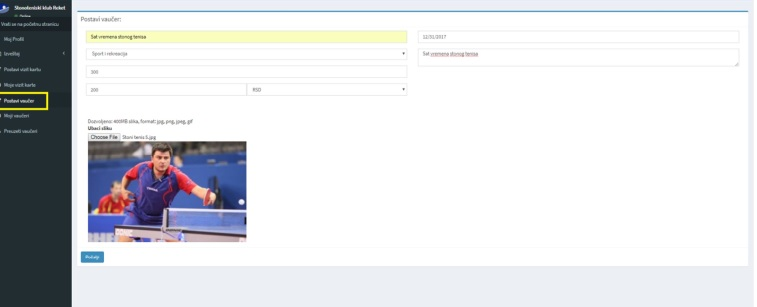

SADRŽAJ
Registracija
Da bi ste postavili Vašu Vizit kartu na sajtu www.statitreba.rs neophodno je da se prvo registrujete obabirom polja „Registruj se“ na početnoj strani sajta.
Nakon toga otvara se prozor za registraciju na kome popunjavate sledeća polja:
- Ime i prezime ukoliko se registrujete kao fizičko lice, odnosno naziv firme ukoliko se registrujete kao pravno lice
- Delatnost – unosite opisno delatnost kojom se bavite
- User name – Unosite vaše korisničko ime koju morate da zapamtite
- Vaša šifra – unosite Vašu šifru (password) koju morate da zapamtite
- Ponovite šifru – unosite ponovo Vašu šifru
- Ubacite logo ukoliko ga imate – unosi se logo – polje nije obavezno
- Okrug – odaberite okrug (region) u kojem obavljate vašu delatnost
- Ulica i broj – Unesite Vašu adresu
- Mesto i poštanski broj – unesite Mesto i poštanski broj
- Fiksni telefon – unesite broj fiksnog telefona
- Mobilni telefon – unesite broj mobilnog telefona
- E-mail – unesite Vaš e-mail
- Web sajt – unesite Vaš web sajt – polje nije obavezno
Nakon popunjavanja, prozor treba da izgleda ovako:
Ukoliko želite da odustanete od registracije pritisnite dugme „Nazad“, ukoliko ste se već registrovali pritisnite
„Već imam nalog“ a ukoliko želite da potvrdite prijavu pritisnite „Registruj se“.
Ukoliko ste pritisnuli dugme „Registruj se“, dobićete poruku: „Uspešno registrovano!“ U suprotnom, morate ponoviti
registraciju
Ukoliko ste se uspešno registrovali, nakon par sekundi aplikacija vas vraća na početnu stranicu
Odabirom polja „Prijavi se“ na meniju, otvara se polje za prijavu:
Nakon prijave, otvara se Vaša kontrolna tabla na kojoj možete kreirati Vašu Vizit kartu i Vaše Vaučere i na kojoj imate pregled o njima.
Ukoliko na „Moj Profil“ priisnete dugme „Izmeni“, možete da korigujete podatke koje ste uneli prilikom registracije.
Klikom na „Pošalji“ podaci će biti izmenjeni
Postavljanje Vizit karte
Na kontrolnoj tabli klikom na polje „Postavi Vizit kartu“ otvara se prozor u kojem se popunjavaju podaci o Vašoj firmi. Osnovni podaci o Vašoj firmi koje ste uneli prilikom registracije već se nalaze u bazi te je neophodno popuniti polje „Opis“ u kojem ćete detaljno opisati delatnost vaše fime, odabrati kategoriju i uneti najviše 4 reprezentativne fotografije ne veće od 400 KB.
Klikom na „Pošalji“ aplikacija j,avlja da je uspešno kreirana Vizit karta
Odabirom polja „Moje Vizit karte“ prikazaće Vam se spisak vaših Vizi karti (ukoliko ste ih postavili više biće ih više)
Klikom na naziv Vizit karte „Stonoteniski klub Reket“ otvoriće Vam se izgled Vizit karte kako će stajati na sajtu:
Ukoliko odaberete opciju izmeni, možete izmeniti sve podatke sa vizit karte ili ukoliko odaberete opciju „Obriši“, obrisaće se kreirana Vizit karta.
Povratkom na osnovni meni u delu „Vizit karte“, prikazaće se Vizit karta Vaše firme na osnovnoj stranici.
Postavljanje Vaučera
Odabirom polja „Postavi vaučer“, otvoriće se prozor za unos podataka za kreiranje Vaučera. Neophodno je da unesete naziv Vaučera, Kategoriju, staru cenu, novu cenu, odaberete valutu, rok do kada važi vaučer i šta ponuda uključuje (u ovo polje možete kopirati podatke sa nekog drugog fajla). Nakon toga unesite reprezentativnu fotografiju, ne veću od 400 KB i pritisnite „Pošalji“.
Ukoliko ste uspešno kreirali Vaučer pojaviće Vam se poruka „Uspešno postavljeno!“
Odabirom na polje „Moji Vaučeri“ možete izvršiti pregled svih postavljenih Vaučera“
Klikom na naziv Vaučera, prikazaće se izgled Vašeg Vaučera
Ukoliko odaberete opciju izmeni, možete izmeniti sve podatke na Vaučeru ili ukoliko odaberete opciju „Obriši“, obrisaće se kreirani Vaučer. Klikom na polje „Preuzeti Vaučeri“ dobijate analitički pregled svih preuzetih vaučera. Kada klijent dođe kod Vas i realizuje vaučer, pritiskom na polje „Završi prodaju“ sa spiska nestaje predmetni Vaučer.
Klikom na „Vaučeri Izveštaj“ u delu Izveštaj, dobijate sintetički pregled svih preuzetih i realizovanih Vaučera
Pregled i preuzimanje Vaučera
Ulaskom na www.statitreba.rs otvara se početna strana „Vaučeri“ koja prikazuje sve aktivne Vaučere koji su postavljeni na sajt.
Ukoliko želite da pretražite pojedine kategorije Vaučera, odabraćete željeno polje, npr. „Medicina“ i aplikacija će Vam prikazati Vaučere samo za tu oblast.
Ukoliko želite da suzite ponudu na određeni okrug (region), u gornjem meniju, pritiskom na polje ,
 i odaberete okrug
i odaberete okrug
prikazuju Vam se samo Vaučeri iz tog okruga, odnosno Vaučeri iz tog okruga i samo po pojedinoj kategoriji. Ukoliko želite da pregledate određeni Vaučer, klikom na odabrano polje otvara se predmetni Vaučer na kojem su postavljene informacije o proizvodu ili usluzi koja se prodaje.
Na samom Vaučeru, možete odabrati pregled Vaučera iz neke druge kategorije.
Ukoliko želite da preuzmete Vaučer, ne morate da se registrujete na sajtu, ne morate da se prijavljujete, ne morate da vršite uplatu. Jednostavno pritiskom na „Preuzmi Vaučer“, otvara se polje za unos Imena i Prezimena i e-mail na koji će vam biti prosleđen Vaučer.
Nakon preuzimanja Vaučera, kontaktirajte prodavca kako bi preuzeli svoj proizvod ili uslugu po povlašćenoj ceni.
Pregled Vizit karti
Odabirom u gornjem meniju „Vizit karte“ prikazuje Vam se nova stranica sa svim vizit kartama koje su unete u aplikaciju.
Kao i kod pregleda Vaučera, možete odabrati region i pojedunu delatnost.
Pritiskom na određenu vizit kartu, otvaraju se podaci o predmetnoj firmi.
U samoj Vizit karti možete odabrati pregled Vizit karti iz neke druge kategorije